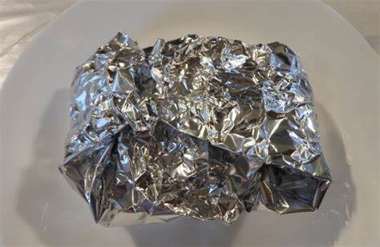

Transfer Learning
Попередньо навчена модель torchvision з донавчанням на датасеті відходів.
Garbage Classification System Based on Machine Learning
GitHub репозиторій →Опис
Система автоматичної класифікації зображень побутових відходів на основі згорткової нейронної мережі (PyTorch) з REST API (FastAPI). Розпізнає 5 категорій: папір, пластик, скло, метал, органіка.
![П'ять категорій побутових відходів: папір, пластик, скло, метал, органіка](data:image/svg+xml,%3Csvg xmlns='http://www.w3.org/2000/svg' width='700' height='130'%3E%3Crect width='700' height='130' rx='10' fill='%23f8f9f7'/%3E%3Ctext x='70' y='60' font-size='38' text-anchor='middle'%3E%F0%9F%93%84%3C/text%3E%3Ctext x='70' y='95' font-size='13' text-anchor='middle' fill='%232d6a4f' font-family='sans-serif'%3E%D0%9F%D0%B0%D0%BF%D1%96%D1%80%3C/text%3E%3Ctext x='210' y='60' font-size='38' text-anchor='middle'%3E%F0%9F%A7%B4%3C/text%3E%3Ctext x='210' y='95' font-size='13' text-anchor='middle' fill='%232d6a4f' font-family='sans-serif'%3E%D0%9F%D0%BB%D0%B0%D1%81%D1%82%D0%B8%D0%BA%3C/text%3E%3Ctext x='350' y='60' font-size='38' text-anchor='middle'%3E%F0%9F%8D%B6%3C/text%3E%3Ctext x='350' y='95' font-size='13' text-anchor='middle' fill='%232d6a4f' font-family='sans-serif'%3E%D0%A1%D0%BA%D0%BB%D0%BE%3C/text%3E%3Ctext x='490' y='60' font-size='38' text-anchor='middle'%3E%F0%9F%A5%AB%3C/text%3E%3Ctext x='490' y='95' font-size='13' text-anchor='middle' fill='%232d6a4f' font-family='sans-serif'%3E%D0%9C%D0%B5%D1%82%D0%B0%D0%BB%3C/text%3E%3Ctext x='630' y='60' font-size='38' text-anchor='middle'%3E%F0%9F%8D%83%3C/text%3E%3Ctext x='630' y='95' font-size='13' text-anchor='middle' fill='%232d6a4f' font-family='sans-serif'%3E%D0%9E%D1%80%D0%B3%D0%B0%D0%BD%D1%96%D0%BA%D0%B0%3C/text%3E%3C/svg%3E)

Актуальність
Неправильне сортування побутових відходів залишається однією з ключових екологічних проблем сучасності. Більшість систем сортування виконуються вручну — це повільно, дорого та залежить від людського фактору.
Автоматизована система класифікації на основі нейронних мереж дозволяє пришвидшити та здешевити процес сортування, підвищити точність і знизити навантаження на операторів.
Проєкт надає REST API для інтеграції у виробничі конвеєрні системи або мобільні застосунки для підтримки роздільного збору відходів.
%3C/text%3E%3Ctext x='310' y='44' font-size='18' fill='%232d6a4f'%3E%E2%86%92%3C/text%3E%3Crect x='330' y='20' width='120' height='40' rx='6' fill='%23d8f3dc'/%3E%3Ctext x='390' y='38' font-size='12' text-anchor='middle' fill='%232d6a4f' font-family='sans-serif'%3EAPI%3C/text%3E%3Ctext x='390' y='53' font-size='11' text-anchor='middle' fill='%232d6a4f' font-family='sans-serif'%3E(FastAPI)%3C/text%3E%3Ctext x='465' y='44' font-size='18' fill='%232d6a4f'%3E%E2%86%92%3C/text%3E%3Crect x='485' y='20' width='95' height='40' rx='6' fill='%232d6a4f'/%3E%3Ctext x='532' y='38' font-size='12' text-anchor='middle' fill='%23fff' font-family='sans-serif'%3E%D0%A0%D0%B5%D0%B7%D1%83%D0%BB%D1%8C%D1%82%D0%B0%D1%82%3C/text%3E%3Ctext x='532' y='53' font-size='11' text-anchor='middle' fill='%23d8f3dc' font-family='sans-serif'%3EJSON%3C/text%3E%3C/svg%3E)
Мета та завдання
Мета: розробити систему автоматичної класифікації зображень побутових відходів на основі глибокого навчання з REST API.
Формування набору зображень відходів з поділом на навчальну, валідаційну та тестову вибірки.
CNN на базі PyTorch із застосуванням transfer learning для досягнення високої точності.
FastAPI сервер з Swagger документацією та підтримкою завантаження зображень.
Оцінка F1-score на тестовій вибірці.
Методологія
Попередньо навчена модель torchvision з донавчанням на датасеті відходів.
Трансформації зображень для збільшення різноманітності навчальних даних.
Асинхронний сервер з Swagger документацією та multipart/form-data.
Статичний аналіз коду Bandit для виявлення вразливостей.
Feature-гілки від main, release-гілки з тегами версій.
Результати
Контакти
Автор: aaavngrd · Сумський державний університет · 2026